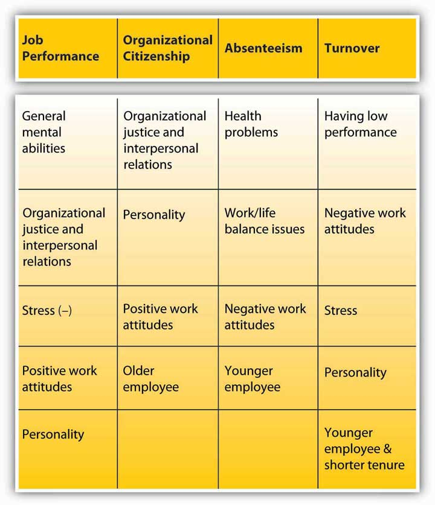

One of the important objectives of the field of organizational behavior is to understand why people behave the way they do. Which behaviors are we referring to here? We will focus on four key work behaviors: job performance, organizational citizenship behaviors, absenteeism, and turnover. Note that the first two behaviors are desirable ones, whereas the other two are often regarded as undesirable. While these four are not the only behaviors organizational behavior is concerned about, if you understand what we mean by these behaviors and the major influences over each type of behavior, you will gain more clarity about analyzing the behaviors of others in the workplace.
Figure 2.15 Factors That Have the Strongest Influence over Work Behaviors
Job performanceThe performance level on factors included in the job description. refers to the level to which an employee successfully fulfills the factors included in the job description. For each job, the content of job performance may differ. Measures of job performance include quality and quantity of work performed by the employee, the accuracy and speed with which the job is performed, and the overall effectiveness of the person on the job.
In many companies, job performance determines whether a person is promoted, rewarded with pay raises, given additional responsibilities, or fired from the job. Therefore, most employers observe and track job performance. This is done by keeping track of data on topics such as the number of sales the employee closes, the number of clients the employee visits, the number of defects found in the employee’s output, or the number of customer complaints or compliments received about the person’s work. In some jobs, objective performance data may not be available, and instead supervisor, coworker, customer, and subordinate assessments of the quality and quantity of work performed by the person become the indicators of job performance. Job performance is one of the main outcomes studied in organizational behavior and is an important variable managers must assess when they are engaged in the Controlling role.
Under which conditions do people perform well, and what are the characteristics of high performers? These questions receive a lot of research attention. It seems that the most powerful influence over our job performance is our general mental abilityOur reasoning abilities, verbal and numerical skills, analytical skills, or overall intelligence level. also known as cognitive ability or intelligence, and often abbreviated as “g.” General mental ability can be divided into several components—reasoning abilities, verbal and numerical skills, and analytical skills—and it seems to be important across different situations. It seems that “g” starts influencing us early in our school days because it is strongly correlated with measures of academic success even in childhood.Kuncel, N. R., Hezlett, S. A., & Ones, D. S. (2004). Academic performance, career potential, creativity, and job performance: Can one construct predict them all? Journal of Personality and Social Psychology, 86, 148–161. In adult life, “g” is also correlated with different measures of job performance.Bertua, C., Anderson, N., & Salgado, J. F. (2005). The predictive validity of cognitive ability tests: A UK meta-analysis. Journal of Occupational and Organizational Psychology, 78, 387–409; Kuncel, N. R., Hezlett, S. A., & Ones, D. S. (2004). Academic performance, career potential, creativity, and job performance: Can one construct predict them all? Journal of Personality and Social Psychology, 86, 148–161; Salgado, J. F., Anderson, N., Moscoso, S., Bertua, C., de Fruyt, F., & Rolland, J. P. (2003). A meta-analytic study of general mental ability validity for different occupations in the European Community. Journal of Applied Psychology, 88, 1068–1081; Schmidt, F. L., & Hunter, J. (2004). General mental ability of the world of work: Occupational attainment and job performance. Journal of Personality and Social Psychology, 86 (1), 162–173; Vinchur, A. J., Schippmann, J. S., Switzer, F. S., & Roth, P. L. (1998). A meta-analytic review of predictors of job performance for salespeople. Journal of Applied Psychology, 83, 586–597. It seems that the influence of “g” on performance is important across different settings, but there is also variation. In jobs with high complexity, it is much more critical to have high general mental abilities. Examples of such jobs are manager, sales representative, engineer, and professions such as law and medicine. In jobs such as police officer and clerical worker, the importance of “g” for high performance is still important but weaker.
Perceptions of organizational justice and interpersonal relationships are factors determining our performance level. When we feel that we are being fairly treated by the company, that our manager is supportive and rewards high performance, and when we trust the people we work with, we tend to perform better. Why? It seems that when we believe we are treated well, we want to reciprocate. Therefore, we treat the company well by performing our job more effectively.
The stress we experience on the job also determines our performance level. When we are stressed, our mental energies are drained. Instead of focusing on the task at hand, we start concentrating on the stressor trying to cope with it. Because our attention and energies are diverted to dealing with stress, our performance suffers. Having role ambiguity and experiencing conflicting role demands are related to lower performance.Gilboa, S., Shirom, A., Fried, Y., & Cooper, C. (2008). A meta-analysis of work demand stressors and job performance: Examining main and moderating effects. Personnel Psychology, 61, 227–271. Stress that prevents us from doing our jobs does not have to be related to our experiences at work. For example, according to a survey conducted by Workplace Options, 45% of the respondents said that financial stress affects work performance. When people are in debt, worrying about their mortgage payments or college payments of their kids, their performance will suffer.Anonymous. (2008, June). Financial stress: The latest worker risk. HR focus, 85(6), 12.
Our work attitudes, particularly job satisfaction, are also correlates of job performance but not to as great a degree as you might expect. Many studies have been devoted to understanding whether happy employees are more productive. Some studies show weak correlations between satisfaction and performance while others show higher correlations (what researchers would call “medium sized” correlations of .30).Iaffaldano, M. T., & Muchinsky, P. M. (1985). Job satisfaction and job performance: A meta-analysis. Psychological Bulletin, 97, 251–273; Judge, T. A., Thoresen, C. J., Bono, J. E., & Patton, G. T. (2001). The job satisfaction–job performance relationship: A qualitative and quantitative review. Journal of Applied Psychology, 127, 376–407; Riketta, M. (2008). The causal relation between job attitudes and performance: A meta-analysis of panel studies. Journal of Applied Psychology, 93, 472–481. The correlation between commitment and performance tends to be even weaker.Mathieu, J. E., & Zajac, D. M. (1990). A review and meta-analysis of the antecedents, correlates, and consequences of organizational commitment. Psychological Bulletin, 108, 171–194; Riketta, M. (2002). Attitudinal organizational commitment and job performance: A meta-analysis. Journal of Organizational Behavior, 23, 257–266; Wright, T. A., & Bonnett, D. G. (2002). The moderating effects of employee tenure on the relation between organizational commitment and job performance: A meta-analysis. Journal of Applied Psychology, 87, 1183–1190. Even with a correlation of .30, though, the relationship may be lower than you may have expected. Why is this the case?
It seems that happy workers have an inclination to be more engaged at work. They may want to perform better. They may be more motivated. But there are also exceptions. Think about this: Because you want to perform, does this mean that you will actually perform better? Chances are your skill level in performing the job will matter. There are also some jobs where performance depends on factors beyond an employee’s control, such as the pace of the machine they are working on. Because of this reason, in professional jobs such as with engineers and researchers, we see a stronger link between work attitudes and performance, as opposed to manual jobs such as assembly-line workers.Riketta, M. (2002). Attitudinal organizational commitment and job performance: A meta-analysis. Journal of Organizational Behavior, 23, 257–266. Also, think about the alternative possibility: If you don’t like your job, does this mean that you will reduce your performance? Maybe up to a certain point, but there will be factors that prevent you from reducing your performance: such as the fear of getting fired, the desire to get a promotion so that you can get out of the job that you dislike so much, or your professional work ethic. As another example, among nurses, there seems to be a weak correlation between satisfaction and performance. Even when they are unhappy, nurses put a lot of effort into their work because they feel a moral obligation to help their patients. As a result, we should not expect a one-on-one relationship between satisfaction and performance. Still, the observed correlation between work attitudes and performance is important and has practical value.
Finally, job performance has a modest relationship with personality traits, particularly conscientiousness. People who are organized, reliable, dependable, and achievement-oriented seem to outperform others in various contexts.Barrick, M. R., & Mount, M. K. (1991). The big five personality dimensions and job performance: A meta-analysis. Personnel Psychology, 44, 1–26; Dudley, N. M., Orvis, K. A., Lebiecki, J. E., & Cortina, J. M. (2006). A meta-analytic investigation of conscientiousness in the prediction of job performance: Examining the intercorrelations and the incremental validity of narrow traits. Journal of Applied Psychology, 91, 40–57; Vinchur, A. J., Schippmann, J. S., Switzer, F. S., & Roth, P. L. (1998). A meta-analytic review of predictors of job performance for salespeople. Journal of Applied Psychology, 83, 586–597.
While job performance refers to the performance of duties listed in one’s job description, organizational citizenship behaviors involve performing behaviors that are more discretionary. Organizational citizenship behaviors (OCB)Voluntary behaviors employees perform to help others and benefit the organization. are voluntary behaviors employees perform to help others and benefit the organization. Helping a new coworker understand how things work in this company, volunteering to organize the company picnic, and providing suggestions to management about how to improve business processes are some examples of citizenship behaviors. These behaviors contribute to the smooth operation of business.
What are the major predictors of citizenship behaviors? Unlike performance, citizenship behaviors do not depend so much on one’s abilities. Job performance, to a large extent, depends on our general mental abilities. When you add the education, skills, knowledge, and abilities that are needed to perform well, the role of motivation on performance becomes more limited. As a result, just because someone is motivated will not mean that the person will perform well. For citizenship behaviors, in contrast, the motivation-behavior link is clearer. We help others around us if we feel motivated to do so, and managers, in the Leadership role, are responsible for motivating employees.
Perhaps the most important factor explaining our citizenship behaviors is organizational justice and interpersonal relationships. When we have a good relationship with our manager and we are supported by our manager, when we are treated fairly, when we are attached to our peers, when we trust the people around us, we are more likely to engage in citizenship behaviors. A high-quality relationship with people we work with will mean that simply doing our job will not be enough to maintain the relationship. In a high-quality relationship, we feel the obligation to reciprocate and go the extra mile to help them out.Cohen-Charash, Y., & Spector, P. E. (2001). The role of justice in organizations: A meta-analysis. Organizational Behavior and Human Decision Processes, 86, 278–321; Colquitt, J. A., Conlon, D. E., Wesson, M. J., Porter, C. O. L. H., & Ng, K. Y. (2001). Justice at the millenium: A meta-analytic review of 25 years of organizational justice research. Journal of Applied Psychology, 86, 425–445; Colquitt, J. A., Scott, B. A., & LePine, J. A. (2007). Trust, trustworthiness, and trust propensity: A meta-analytic test of their unique relationships with risk taking and job performance. Journal of Applied Psychology, 92, 909–927; Fassina, N. E., Jones, D. A., & Uggerslev, K. L. (2008). Relationship clean-up time: Using meta-analysis and path analysis to clarify relationships among job satisfaction, perceived fairness, and citizenship behaviors. Journal of Management, 34, 161–188; Hoffman, B. J., Blair, C. A., Meriac, J. P., & Woehr, D. J. (2007). Expanding the criterion domain? A quantitative review of the OCB literature. Journal of Applied Psychology, 92, 555–566; Ilies, R., Nahrgang, J. D., & Morgeson, F. P. (2007). Leader-member exchange and citizenship behaviors: A meta-analysis. Journal of Applied Psychology, 92, 269–277; Lepine, J. A., Erez, A., & Johnson, D. E. (2002). The nature and dimensionality of organizational citizenship behavior: A critical review and meta-analysis. Journal of Applied Psychology, 87, 52–65; Organ, D. W., & Ryan, K. (1995). A meta-analytic review of attitudinal and dispositional predictors of organizational citizenship behavior. Personnel Psychology, 48, 775–802; Podsakoff, P. M., MacKenzie, S. B., & Bommer, W. H. (1996). Meta-analysis of the relationships between Kerr and Jermier’s substitutes for leadership and employee job attitudes, role perceptions, and performance. Journal of Applied Psychology, 81, 380–399; Riketta, M., & Van Dick, R. (2005). Foci of attachment in organizations: A meta-analytic comparison of the strength and correlates of workgroup versus organizational identification and commitment. Journal of Vocational Behavior, 67, 490–510.
Our personality is yet another explanation for why we perform citizenship behaviors. Personality is a modest predictor of actual job performance but a much better predictor of citizenship. People who are conscientious, agreeable, and low on Neuroticism tend to perform citizenship behaviors more often than others.Borman, W. C., Penner, L. A., Allen, T. D., & Motowidlo, S. J. (2001). Personality predictors of citizenship performance. International Journal of Selection and Assessment, 9, 52–69; Dalal, R. S. (2005). A meta-analysis of the relationship between organizational citizenship behavior and counterproductive work behavior. Journal of Applied Psychology, 90, 1241–1255; Diefendorff, J. M., Brown, D. J., Kamin, A. M., & Lord, R. G. (2002). Examining the roles of job involvement and work centrality in predicting organizational citizenship behaviors and job performance. Journal of Organizational Behavior, 23, 93–108; Organ, D. W., & Ryan, K. (1995). A meta-analytic review of attitudinal and dispositional predictors of organizational citizenship behavior. Personnel Psychology, 48, 775–802.
Job attitudes are also moderately related to citizenship behaviors—more so than they are to job performance. People who are happier at work, those who are more committed to their companies, and those who have overall positive attitudes toward their work situation tend to perform citizenship behaviors more often than others. When people are unhappy, they tend to be disengaged from their jobs and rarely go beyond the minimum that is expected of them.Dalal, R. S. (2005). A meta-analysis of the relationship between organizational citizenship behavior and counterproductive work behavior. Journal of Applied Psychology, 90, 1241–1255; Diefendorff, J. M., Brown, D. J., Kamin, A. M., & Lord, R. G. (2002). Examining the roles of job involvement and work centrality in predicting organizational citizenship behaviors and job performance. Journal of Organizational Behavior, 23, 93–108; Fassina, N. E., Jones, D. A., & Uggerslev, K. L. (2008). Relationship clean-up time: Using meta-analysis and path analysis to clarify relationships among job satisfaction, perceived fairness, and citizenship behaviors. Journal of Management, 34, 161–188; Hoffman, B. J., Blair, C. A., Meriac, J. P., & Woehr, D. J. (2007). Expanding the criterion domain? A quantitative review of the OCB literature. Journal of Applied Psychology, 92, 555–566; Lepine, J. A., Erez, A., & Johnson, D. E. (2002). The nature and dimensionality of organizational citizenship behavior: A critical review and meta-analysis. Journal of Applied Psychology, 87, 52–65; Organ, D. W., & Ryan, K. (1995). A meta-analytic review of attitudinal and dispositional predictors of organizational citizenship behavior. Personnel Psychology, 48, 775–802; Riketta, M. (2002). Attitudinal organizational commitment and job performance: A meta-analysis. Journal of Organizational Behavior, 23, 257–266; Riketta, M., & Van Dick, R. (2005). Foci of attachment in organizations: A meta-analytic comparison of the strength and correlates of workgroup versus organizational identification and commitment. Journal of Vocational Behavior, 67, 490–510.
Interestingly, age seems to be related to the frequency with which we demonstrate citizenship behaviors. People who are older are better citizens. It is possible that with age we gain more experiences to share. It becomes easier to help others because we have more accumulated company and life experiences to draw from.Ng, T. W. H., & Feldman, D. C. (2008). The relationship of age to ten dimensions of job performance. Journal of Applied Psychology, 93, 392–423.
Absenteeism refers to Unscheduled absences from work. Such absences are costly to companies because of their unpredictable nature, affecting a manager’s ability to Control the firm’s or department’s budget. When an employee has an unscheduled absence from work, companies struggle to find replacement workers at the last minute. This may involve hiring contingent workers, having other employees work overtime, or scrambling to cover for an absent coworker. The cost of absenteeismFailure to appear at work. to organizations is estimated at $74 billion. According to a Mercer Human Resource consulting study, 15% of the money spent on payroll is related to absenteeism.Conlin, M. (2007, November 12). Shirking working: The war on hooky. Business Week, 4058, 72–75; Gale, S. F. (2003, September). Sickened by the cost of absenteeism, companies look for solutions. Workforce Management, 82 (9), 72–75.
What causes absenteeism? First, we need to look at the type of absenteeism. Some absenteeism is unavoidable and is related to health reasons. For example, reasons such as acute or serious illness, lower back pain, migraines, accidents one may have on or off the job, or acute stress are important reasons for absenteeism.Farrell, D., & Stamm, C. L. (1988). Meta-analysis of the correlates of employee absence. Human Relations, 41, 211–227; Martocchio, J. J., Harrison, D. A., & Berkson, H. (2000). Connections between lower back pain, interventions, and absence from work: A time-based meta-analysis. Personnel Psychology, 53, 595–624. Health-related absenteeism is costly, but it would be unreasonable and unfair to institute organizational policies penalizing it. When an employee has a contagious illness, showing up at work will infect coworkers and will not be productive. If the illness is not contagious, it is still in the organization’s best interest for the employee to receive proper medical treatment and rest to promote a full recovery. Indeed, companies are finding that programs aimed at keeping workers healthy are effective in dealing with this type of absenteeism. Companies using wellness programs, educating employees about proper nutrition, helping them exercise, and rewarding them for healthy habits have reported reduced absenteeism.Parks, K. M., & Steelman, L. A. (2008). Organizational wellness programs: A meta-analysis. Journal of Occupational and Organizational Psychology, 13, 58–68.
Work/life balance is another common reason for absences. Staying home to care for a sick family member, attending the wedding or funeral of a loved one, and skipping work to study for an exam are all common reasons for unscheduled absences. Companies may deal with these by giving employees more flexibility in work hours. If employees can manage their own time, they are less likely to be absent. Conversely, when a company has “sick leave” but no other leave for social and family obligations, they may fake being sick and use their “sick leave.” One solution is to have a single paid time off policy that would allow workers to balance work and life and allow companies to avoid unscheduled absences. Organizations such as Lahey Clinic at Burlington, Massachusetts, have found this to be effective in dealing with unscheduled absences. Some companies such as IBM got rid of sick leave altogether and instead allow employees to take as much time off as they need, so long as the work gets done.Cole, C. L. (2002, September). Sick of absenteeism? Get rid of sick days. Workforce, 81(9), 56–61; Conlin, M. (2007, November 12). Shirking working: The war on hooky. Business Week, 4058, 72–75; Baltes, B. B., Briggs, T. E., Huff, J. W., Wright, J. A., & Neuman, G. A. (1999). Flexible and compressed workweek schedules: A meta-analysis of their effects on work-related criteria. Journal of Applied Psychology, 84, 496–513.
Sometimes, absenteeism is a form of work withdrawal and a step followed by turnover. In other words, poor work attitudes lead to absenteeism. When employees are dissatisfied with their work or have low organizational commitment, they are likely to be absent more often. Thus, absenteeism is caused by the desire to avoid an unpleasant work environment. In this case, management may deal with absenteeism by investigating the causes of dissatisfaction and dealing with them.
Are there personal factors contributing to absenteeism? Research does not reveal a consistent link between personality and absenteeism, but there is one demographic criterion that predicts absenteeism: age. Interestingly, and against some stereotypes that increased age would bring more health problems, research shows that age is negatively related to both frequency and duration of absenteeism. That is, younger workers are the ones more likely to be absent. Because of reasons that include higher loyalty to their company and a stronger work ethic, older employees are less likely be absent from work.Martocchio, J. J. (1989). Age-related differences in employee absenteeism: A meta-analysis. Psychology and Aging, 4, 409–414; Ng, T. W. H., & Feldman, D. C. (2008). The relationship of age to ten dimensions of job performance. Journal of Applied Psychology, 93, 392–423.
Turnover refers to an employee’s leaving an organization. Employee turnoverAn employee’s leaving an organization. has potentially harmful consequences, such as poor customer service and poor company-wide performance. When employees leave, their jobs still need to be performed by someone, so companies spend time recruiting, hiring, and training new employees, all the while suffering from lower productivity. Yet, not all turnover is bad. Turnover is particularly a problem when high-performing employees leave, while a poor performer’s leaving may actually give the company a chance to improve productivity and morale.
Why do employees leave? An employee’s performance level is an important reason. People who perform poorly are actually more likely to leave. These people may be fired, may be encouraged to quit, or may quit because of their fear of being fired. Particularly if a company has pay-for-performance systems, poor performers will find that they are not earning much due to their below-standard performance. This gives poor performers an extra incentive to leave. This does not mean that high performers will definitely stay with a company. High performers may find it easier to find alternative jobs, so when they are unhappy, they can leave more quickly.
Work attitudes are often the primary culprit in why people leave. When workers are unhappy at work, and when they do not feel committed to their companies, they are more likely to leave. Loving the things you do, being happy with the opportunities for advancement within the company, being happy about pay are all aspects of our work attitudes relating to turnover. Of course, the link between work attitudes and turnover is not direct. When employees are unhappy, they will have the intention to leave and may start looking for a job. But their ability to actually leave will depend on many factors, such as their employability and the condition of the job market. For this reason, when national and regional unemployment is high, many people who are unhappy will still continue to work for their current company. When the economy is doing well, people will start moving to other companies in response to being unhappy. Understanding the connection between employee happiness and turnover, many companies make an effort to make employees happy. SAS Institute employees have a 35-hour workweek and enjoy amenities such as a swimming pool and child care at work. The company’s turnover is around 4%–5%, in comparison to the industry averages ranging from 12%–20%.Carsten, J. M., & Spector, P. E. (1987). Unemployment, job satisfaction, and employee turnover: A meta-analytic test of the Muchinsky model. Journal of Applied Psychology, 72, 374–381; Cohen, A. (1991). Career stage as a moderator of the relationships between organizational commitment and its outcomes: A meta-analysis. Journal of Occupational Psychology, 64, 253–268; Cohen, A. (1993). Organizational commitment and turnover: A meta-analysis. Academy of Management Journal, 36, 1140–1157; Cohen, A., & Hudecek, N. (1993). Organizational commitment—turnover relationship across occupational groups: A meta-analysis. Group & Organization Management, 18, 188–213; Griffeth, R. W., Hom, P. W., & Gaertner, S. (2000). A meta-analysis of antecedents and correlates of employee turnover: Update, moderator tests, and research implications for the next millennium. Journal of Management, 26, 463–488; Hom, P. W., Caranikas-Walker, F., Prussia, G. E., & Griffeth, R. W. (1992). A meta-analytical structural equations analysis of a model of employee turnover. Journal of Applied Psychology, 77, 890–909; Karlgaard, R. (2006, October 16). Who wants to be public? Forbes Asia, 2(17), 22; Meyer, J. P., Stanley, D. J., Herscivitch, L., & Topolnytsky, L. (2002). Affective, continuance, and normative commitment to the organization: A meta-analysis of antecedents, correlates, and consequences. Journal of Vocational Behavior, 61, 20–52; Steel, R. P., & Ovalle, N. K. (1984). A review and meta-analysis of research on the relationship between behavioral intentions and employee turnover. Journal of Applied Psychology, 69, 673–686; Tett, R. P., & Meyer, J. P. (1993). Job satisfaction, organizational commitment, turnover intentions, and turnover: Path analyses based on meta-analytic findings. Personnel Psychology, 46, 259–293.
People are more likely to quit their jobs if they experience stress at work as well. Stressors such as role conflict and role ambiguity drain energy and motivate people to seek alternatives. For example, call center employees experience a great deal of stress because of poor treatment from customers, long work hours, and constant monitoring of their every action. Companies such as EchoStar realize that one method that is effective in retaining their best employees is to give them opportunities to move to higher-responsibility jobs elsewhere in the company. When a stressful job is a step toward a more desirable job, employees seem to stick around longer.Badal, J. (2006, July 24). “Career path” programs help retain workers. Wall Street Journal, B1; Griffeth, R. W., Hom, P. W., & Gaertner, S. (2000). A meta-analysis of antecedents and correlates of employee turnover: Update, moderator tests, and research implications for the next millennium. Journal of Management, 26, 463–488; Podsakoff, N. P., LePine, J. A., & LePine, M. A. (2007). Differential challenge stressor-hindrance stressor relationships with job attitudes, turnover intentions, turnover, and withdrawal behavior: A meta-analysis. Journal of Applied Psychology, 92, 438–454.
There are also individual differences in whether people leave or stay. For example, personality is a factor in the decision to quit one’s job. People who are conscientious, agreeable, and emotionally stable are less likely to quit their jobs. Many explanations are possible. People with these personality traits may perform better at work, which leads to lower quit rates. Or, they may have better relations with coworkers and managers, which is a factor in their retention. Whatever the reason, it seems that some people are likely to stay longer at any given job regardless of the circumstances.Salgado, J. F. (2002). The big five personality dimensions and counterproductive behaviors. International Journal of Selection and Assessment, 10, 117–125; Zimmerman, R. D. (2008). Understanding the impact of personality traits on individuals’ turnover decisions: A meta-analytic path model. Personnel Psychology, 61, 309–348.
Whether we leave a job or stay also depends on our age and how long we have been there. It seems that younger employees are more likely to leave. This is not surprising because people who are younger often have fewer responsibilities such as supporting a household or having dependents. As a result, they can quit a job they don’t like much more easily. They may also have higher expectations and thus be more easily disappointed when a job proves to be less rewarding than they had imagined. Similarly, people who have been with a company for a short period of time can quit more easily. For example, Sprint Nextel found that many of their new hires were likely to quit within 45 days of their hiring dates. When they investigated, they found that newly hired employees were experiencing a lot of stress from avoidable problems such as unclear job descriptions or problems with hooking up their computers. Sprint was able to solve the turnover problem by paying special attention to orienting new hires. New employees experience a lot of stress at work, and there is usually not much keeping them in the company such as established bonds to a manager or colleagues. New employees may even have ongoing job interviews with other companies when they start working. This, too, gives them the flexibility to leave more easily.
Employees demonstrate a wide variety of positive and negative behaviors at work. Among these, four are critically important and have been extensively studied in the OB literature. Job performance is the degree of success with which one accomplishes the tasks listed in one’s job description. A person’s abilities, particularly general mental ability, are the main predictor of job performance in many occupations. How we are treated at work, the level of stress experienced at work, work attitudes, and, to a lesser extent, our personality are also factors relating to one’s job performance. Citizenship behaviors are tasks helpful to the organization that go above and beyond one’s job description. Performance of citizenship behaviors are less a function of our abilities and more of motivation. How we are treated at work, personality, work attitudes, and our age are the main predictors of citizenship. Among negative behaviors employees demonstrate, absenteeism and turnover are critically important. People who experience health problems and work/life balance issues are prone to more absenteeism. Poor work attitudes are also related to absenteeism, and younger employees are more likely to be absent from work, especially when dissatisfied. Turnover is higher among low performers, people who have negative work attitudes, and those who experience a great deal of stress. Personality and being younger are personal predictors of turnover.